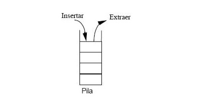

Funcionamiento Interno de Un Computador
UNIDAD I
Reynel Axel Perdomo
2012-6517
Conceptos Previos
Una puerta lógica, o compuerta lógica
Es un dispositivo electrónico con una función booleana. Suman, multiplican, niegan o afirman, incluyen o excluyen según sus propiedades lógicas. Se pueden aplicar a tecnología electrónica, eléctrica, mecánica, hidráulica y neumática. Son circuitos de conmutación integrados en un chip.
Un biestable (flip-flop en inglés)
Es un multivibrador capaz de permanecer en uno de dos estados posibles durante un tiempo indefinido en ausencia de perturbaciones.

También llamado fila o TUPLA
Representa un objeto único de datos implícitamente estructurados en una tabla. En términos simples.

Circuito Integrado
Es un circuito hecho para pasar información de un sistema a otro con clave diferente, y en tal caso un decodificador sería el circuito o dispositivo que retorne los datos o información al primer sistema.

Diferencias...
Un multiplexor es un circuito combinacional de varias entradas de señal y una única salida. Los demultiplexores efectúan la operación inversa de los multiplexores y se utilizan para distribuir una señal que llega por una única entrada a un conjunto de salidas. De la misma forma, las entradas de selección permiten elegir a cuál de las salidas se redirige la señal de entrada.

LIFO (Last in-first out)
la última información introducida en la memoria es la primera en extraerse, es lo que se llama una pila o apilamiento. El término LIFO se utiliza en estructuras de datos y teoría de colas.
FIFO (First In – First Out) | Primero en Entrar – Primero en Salir
Es lo que se llama una fila de espera. FIFO se utiliza en estructuras de datos para implementar colas. La implementación puede efectuarse con ayuda de arreglos o vectores, o bien mediante el uso de punteros y asignación dinámica de memoria.
Memoria Caché
Cuando en informática se habla de memoria caché o cache se está hablando de aquella cantidad de información que permanece de manera temporal en la computadora y que ayuda a la adquisición de velocidad y eficiencia cuando es necesario recurrir a determinado tipo de datos. El nombre de memoria cache proviene del francés, que significa "escondido" u "oculto".
0_1_2_3_.....7
Este circuito puede contar hasta el número 7, es decir, 8 valores. Cuando llegue al último valor volverá a contar desde el principio. Podemos decir que el contador pasa por 8 estados distintos según su salida.
Funcionamiento de Una Computadora
Entrada (E)
Memoria Externa (ME)
Salida (S)
Unidades Centrales
Unidad de Control(CU)
Memoria Interna (MI)
Unidad Aritmético-Lógica (ALU)
Procesador (CPU)
El Procesador
Es el Cerebro de la Computadora
Un circuito integrado complejo que se encarga de dar instrucciones programadas mediante operaciones aritméticas y lógicas a través del sistema operativo. Posee varias unidades centrales de procesamiento, las cuales están constituidas por registros, unidad de control, unidad lógica y unidad que funciona como coprocesador matemático.
La frecuencia de reloj de los procesadores indican la frecuencia con la cual la corriente eléctrica entra y sale por los transistores. Esta magnitud física se mide por Hz (Hertz) y determina los ciclos eléctricos por segundo dentro de un transistor.
Intel i8800
1974
Intel i386
1985
Amd Athlon 64
2004
Intel i7-8086K
2018
AMD Ryzen 5
2018
Elementos Internos de un Procesador
Unidade de Tratamiento
RF
RT
ALU
FF
Z
S
C
V
AR
DR
Unidad de Control
reloj
SP
IR
PC
Lógica de Control
Temporización en la Ejecución de Instrucciones
Fase de captación de instrucción
AR ← PC
DR ← M(AR)
IR ← DR
PC ← PC + 1
(Suponemos que cada instrucción ocupa una sola posición de memoria.)
Fase de Ejecución
Se realizan las operaciones específicas correspondientes al codop de la instrucción almacenada en IR. Dependiendo de la instrucción se efectúan operaciones tales como captación o búsqueda de operandos en memoria, cálculos en la ALU, almacenamiento de resultados en registros o memoria, etc.
De la descripción anterior se deduce que la ejecución de una instrucción lleva consigo, por lo menos, un acceso a memoria (para captar la instrucción), pudiendo efectuar accesos adicionales (captación de datos, memorización de resultados, etc.).
Una interrupción interrupción
Es una detención de la ejecución de un programa antes de que concluya para ejecutar otro. Normalmente, la detención se realiza para ejecutar otro procedimiento prioritario denominado programa de gestión de la interrupción, soliéndose continuar después con la ejecución del programa interrumpido.
Fallo de la alimentación |
Anomalías del Hardware |
Petición de E/S de un Periférico |
Desbordamiento |
Utilización de una instrucción máquina inexistente |
Gestión de tiempo compartido |
Violación de la protección de memoria |
Peticiones del programador o usuario
1
2
3
4
5